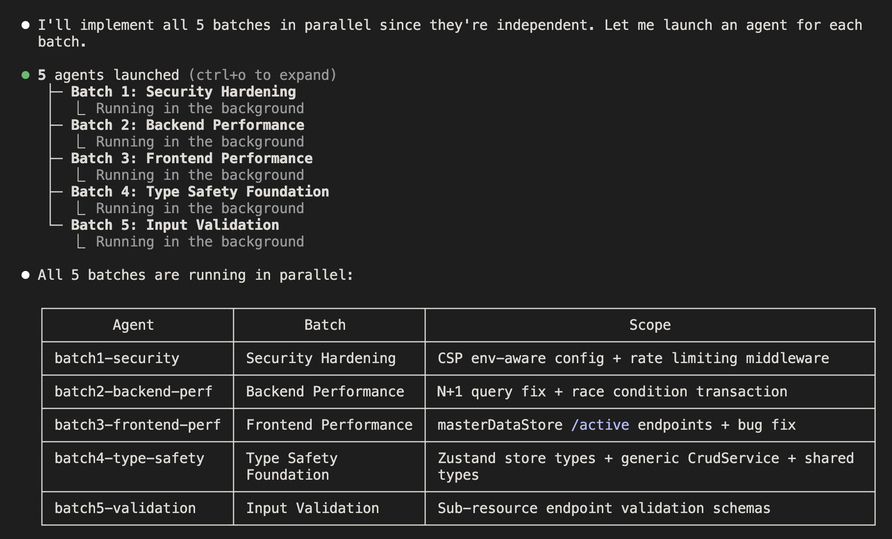
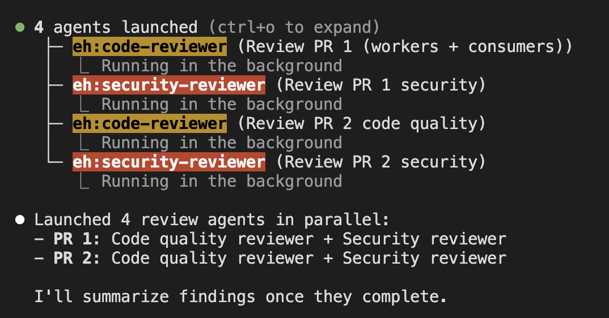
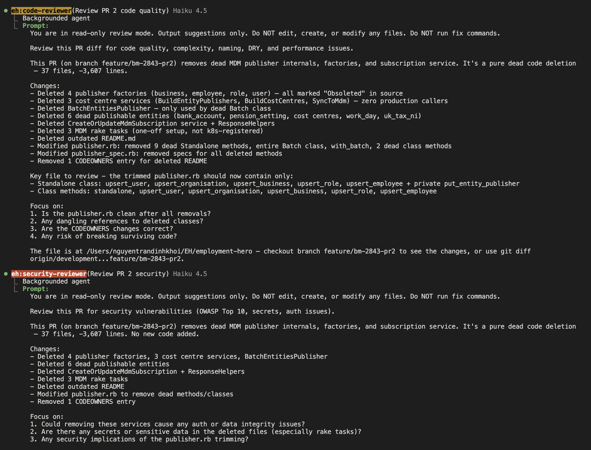
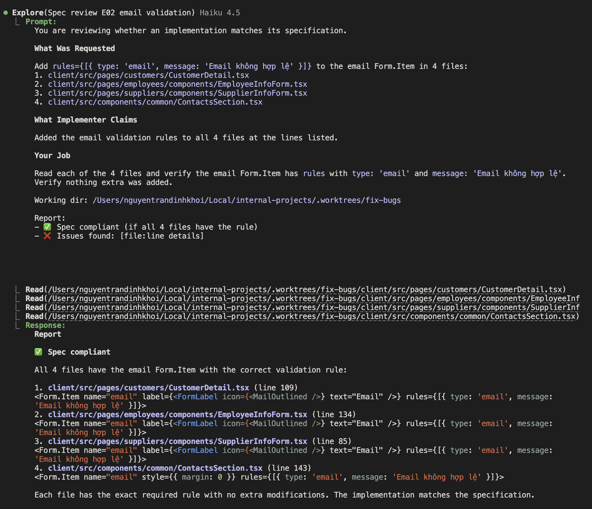
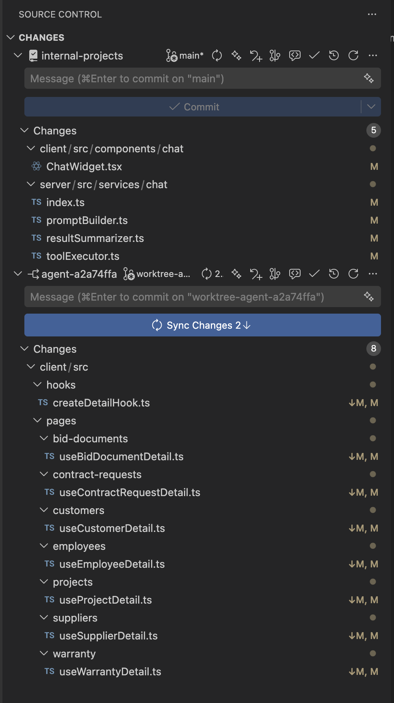
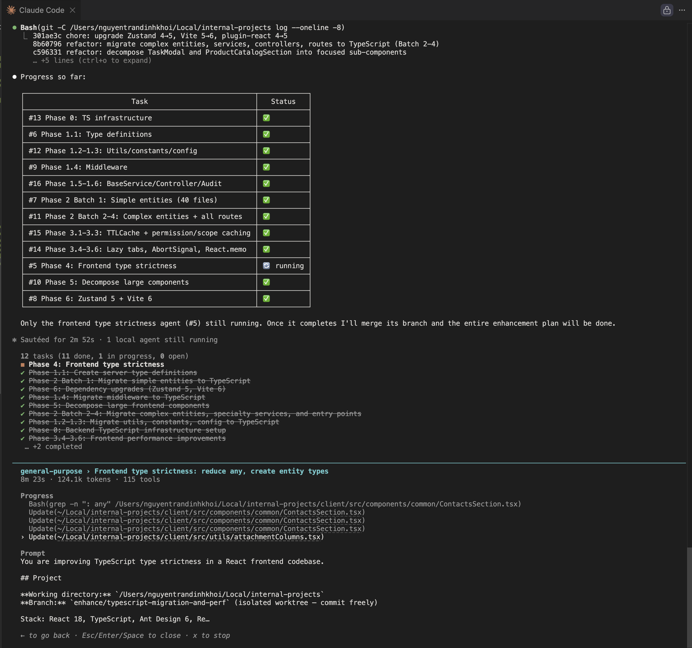
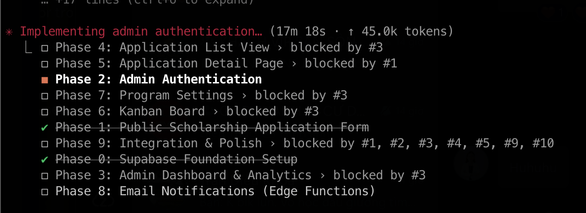

Claude Code
Multi-Agent
Orchestration
You use Claude Code daily. But most of us run a single session and call it a day. Let's explore the agent architecture underneath — subagents, agent teams, and how they actually work at the system level.
Two systems, different problems
Claude Code has two distinct parallelism mechanisms. They share a name but work completely differently under the hood.
What exactly is a subagent?
A subagent is a child Claude instance spawned within your session via the Agent tool (previously called Task tool, renamed in v2.1.63). It gets its own context window, system prompt, and tool permissions — but runs inside the same process.
How it works internally
description fields to find the best matchAgent in a subagent's tools array, it will be ignored.prompt string. No conversation history is inherited. Include file paths, error messages, decisions — everything it needs.5 built-in subagent types
🔍 Explore
Read-only codebase navigator. Runs on Haiku by default — extremely fast and cheap. Claude specifies thoroughness: quick (targeted lookup), medium (balanced), or very thorough (comprehensive analysis).
📋 Plan
Research agent for plan mode. Read-only. Inherits your model (not Haiku). Used when Claude needs to understand your codebase before presenting a plan. Prevents nesting.
⚙️ general-purpose
Full-featured worker. Inherits your model. All tools available. Claude delegates here when work requires both exploration and modification, or multiple dependent steps.
💻 Bash
Inherits your model. Dedicated to terminal commands in a separate context — keeps shell output from bloating your main window.
📚 Claude Code Guide
Runs on Haiku. Answers questions about Claude Code features, documentation, and capabilities. Read-only access to docs.
@ and pick a subagent from typeahead — like @-mentioning files. This guarantees that specific agent runs instead of leaving the choice to Claude. Or use --agent name to run the whole session as that agent.Ctrl+B to send a foreground subagent to background mid-execution. Resume later with SendMessage using the agent's ID. Useful when you realize a task will take longer than expected.What it looks like in practice


Build your own specialists
Custom subagents are Markdown files with YAML frontmatter. Place them in .claude/agents/ and Claude auto-discovers them. You can also get them from installed plugins.
/agents → Create new → describe what it does. Claude generates the Markdown file for you. You can also ask Claude to "generate a subagent definition."Key configuration options
model — cost control
haiku for exploration (fast, cheap), sonnet for standard work, opus for critical decisions. This is a huge cost lever most people miss.
tools — principle of least privilege
Only grant what's needed. A reviewer shouldn't have Write. An explorer shouldn't have Bash. Restricting tools prevents accidents and reduces cost.
description — routing is everything
Claude uses this to decide when to delegate. Write "MUST BE USED for X" to strongly trigger on matching tasks. Vague descriptions = agent never gets invoked.
memory — persistent learning
project (shared via git — team benefits), user (in ~/.claude/agent-memory/ — personal), local (gitignored). The agent builds knowledge over time across sessions.
memory: project is set, the agent gets its own .claude/agent-memory/<name>/MEMORY.md. First 200 lines are injected into context at startup. The agent builds knowledge across sessions — learning your codebase patterns, past reviews, known issues. Git-tracked = your whole team benefits.Where agents live
--agents JSON → session only (highest priority)What expanded agents look like


Prompt engineering for agents
The prompt is the only context channel to a subagent. No conversation history carries over — so the prompt must be self-contained.
Build an agent prompt
Vague vs structured prompts
Vague prompt
Structured prompt
Advanced prompting patterns
The Interview Pattern
Power-user prompting tricks
Agent tool: every parameter
This is the actual tool call structure. Claude calls this internally when spawning subagents. Understanding these parameters is the key to controlling agent behavior.
All 14 frontmatter fields
SendMessage({to: name}) for follow-ups.Agent(worker, researcher) restricts which subagents it can spawn. disallowedTools applied first.haiku | sonnet | opus | full model ID | inherit (default). Biggest cost lever.low | medium | high | max. Opus 4.6 only. Controls adaptive thinking token budget."worktree" = own git branch. Auto-cleaned if no changes. Transcripts at ~/.claude/projects/.../subagents/project (git-tracked) | user (~/.claude) | local (gitignored). Auto-enables Read/Write/Edit tools.--agent flag (main session agent). Commands and skills processed. Prepended to user-provided prompt.--agents JSON) > project (.claude/agents/) > user (~/.claude/agents/) > plugin. Project-level overrides user-level on name conflict.The SendMessage pattern
SendMessage continues the conversation without re-spawning or losing the agent's accumulated context. Think of it as a running service you can query multiple times.Permission modes: per-agent control
The mode parameter lets you set different permission levels per subagent. An explorer shouldn't have the same privileges as an implementer.
| Capability | default |
acceptEdits |
plan |
auto |
bypassPerms |
dontAsk |
|---|---|---|---|---|---|---|
| File Read (Read, Glob, Grep) | ✓ | ✓ | ✓ | ✓ | ✓ | ✓ |
| File Write (Edit, Write) | 🔒 | ✓ | ✗ | ✓* | ✓ | ✗ |
| Shell Execution (Bash) | 🔒 | 🔒 | ✗ | ✓* | ✓ | ✗ |
| MCP Tools | 🔒 | 🔒 | ✗ | ✓* | ✓ | ✗ |
| Agent Spawn | 🔒 | 🔒 | ✗ | ✓* | ✓ | ✗ |
Auto mode deep dive
permissionMode frontmatter is ignored. Classifier gates the subagent's tool calls independently.Plan mode & security layers
Plan mode — 4 approval paths
1. Approve + start auto mode
Plan approved, switches to auto mode for execution. Classifier gates all actions.
2. Approve + accept edits
Plan approved, switches to acceptEdits. File writes auto-approved, bash still prompts.
3. Approve + manual review
Plan approved, stays in default mode. Every action requires your approval.
4. Keep planning
Not ready yet. Iterate on direction, ask more questions. Stays in plan mode.
"disableBypassPermissionsMode": "disable"⇧Tab cycles: default → acceptEdits → plan → auto
auto only appears with
--enable-auto-mode + Team plandontAsk never in cycle — CLI only:
--permission-mode dontAsk
/sandbox for OS-level isolation. Controls filesystem access (allowWrite/denyWrite/denyRead), network (allowedDomains), and excluded commands. Configured in settings.json under sandbox.~/.ssh/**, ~/.aws/**, ~/.npmrc, ~/.git-credentials
3) Devcontainers / disposable droplets for untrusted code.
Also: "enableAllProjectMcpServers": false to block malicious MCP in compromised repos.
trailofbits/claude-code-config
What exactly is an Agent Team?
Agent Teams are multiple independent Claude Code processes coordinated through file-based messaging and a shared task list. Shipped Feb 5, 2026 as a research preview. Requires Opus 4.6 + v2.1.32+.
System architecture
• Spawns teammates
• Manages task list
• Synthesizes results
• Can do work itself
(unless delegate mode)
• Own context window
• Own git worktree
• Reads project CLAUDE.md
• Can message anyone
• Can use subagents (Task)
How it actually works
The TeammateTool — 13 operations
Discovered Jan 26, 2026 when a dev ran strings on the Claude Code binary. Was hidden behind two feature gates. Now officially exposed.
2 display modes
it2 CLI + Python API). Setting: "teammateMode": "tmux""auto" — split if already in tmux, else in-process. --teammate-mode flag for one session.Inbox messaging & git worktrees
Inbox messaging — the file system is the bus
Git worktrees — how teammates don't collide
Each teammate works in its own git worktree — an independent working directory pointing to a different branch of the same repo.
A src/middleware/auth.ts
M src/App.tsx
SubagentStart/SubagentStop and WorktreeCreate/WorktreeRemove hooks to log, audit, or enforce policies on teammate activity. docs/hooks📸 Real worktrees in VS Code

Task tracking in action


From zero to running team
What happens when you run this
spawnTeam("payment-refactor"). Creates team directory at ~/.claude/teams/payment-refactor/requestShutdown() for each teammate. Reviews merged results. Runs cleanup.Subagents vs Agent Teams
They solve fundamentally different problems. Here's the complete developer-facing comparison.
| 🔧 Subagents | 👥 Agent Teams | |
|---|---|---|
| Process model | Child context within your session process | Separate Claude Code processes (one per teammate) |
| Context window | Own context (200K or 1M), shares process with parent | Completely independent context per teammate (200K or 1M) |
| Communication | Return value only → parent. No peer messaging. | Inbox-based JSON messaging. Peer-to-peer + broadcast. |
| Git isolation | Same working directory as parent | Own git worktree per teammate (separate branch) |
| Can spawn children? | ❌ No nesting — subagents can't spawn subagents | ✅ Teammates can spawn subagents (Task tool) |
| Model selection | ✅ Per-agent: haiku / sonnet / opus | ❌ All teammates use same model (Opus required) |
| Task dependencies | Manual — you orchestrate the order | Built-in task list with blockedBy support |
| Token cost | Low — isolated context, cheap model routing | ~7× a single session (each teammate has own context window) |
| Startup time | Instant (within same session) | Slower — each teammate is a full Claude Code launch |
| Display | Results inline in your chat | Split panes (tmux/iTerm2) or in-process tab switching |
| Persistence | Gone when session ends (unless memory configured) | Team state persists at ~/.claude/teams/ |
| Stability | Stable, production-ready | Experimental research preview |
✅ Use Subagents when…
• Code review of a single module
• Tasks that don't need inter-agent communication
• You want cost control (route to Haiku)
• Sequential pipeline: explore → plan → implement
• 95% of everyday Claude Code usage
✅ Use Agent Teams when…
• Teammates need to coordinate on contracts/schemas
• Debugging with competing hypotheses
• Tech decisions that benefit from debate
• Cross-layer work: frontend + backend + tests
• Large refactors touching many files
When to use what
Click through the decision tree to find the right approach for your task.
What agents actually inherit
The #1 source of confusion. Here's exactly what context, tools, and config each agent type receives — and what it doesn't.
🔧 Subagent inherits
| Property | Inherited? |
|---|---|
| Context window | 🆕 Fresh — own context (200K default, 1M with [1m] models) |
| Conversation history | ❌ None. Only gets the prompt string you pass |
| CLAUDE.md | ✅ Read from working directory automatically |
| Tools (Read, Bash…) | ✅ All parent tools by default (restrict via tools/disallowedTools) |
| MCP servers | ✅ All parent MCP tools inherited by default* |
| Skills | ✅ Auto-activated based on task relevance |
| Model | 🔀 Configurable per-agent — haiku/sonnet/opus |
| Permissions | ✅ Inherits parent's permission mode |
| Memory (MEMORY.md) | ✅ First 200 lines loaded if memory_scope set |
| Git worktree | ❌ Same working directory as parent |
run_in_background: true) currently cannot access MCP tools. Set run_in_background: false if you need MCP.👥 Teammate inherits
| Property | Inherited? |
|---|---|
| Context window | 🆕 Fresh — own context (200K default, 1M with [1m]) |
| Lead's conversation | ❌ Nothing. Only gets the spawn prompt |
| CLAUDE.md | ✅ Read from worktree directory |
| Tools | ✅ All lead's tools |
| MCP servers | ✅ All lead's MCP connections |
| Skills | ✅ Auto-activated from worktree |
| Model | 🔒 Same as lead — no per-teammate model yet |
| Permissions | ✅ Lead's permission settings (can change post-spawn) |
| Git worktree | 🆕 Own worktree — independent branch |
| Can spawn subagents? | ✅ Yes — teammates can use the Agent tool |
| Can message peers? | ✅ Direct inbox messaging to any teammate |
prompt string. No conversation history carries over. This is why prompting matters so much — include file paths, error messages, decisions, and everything the agent needs. Think of it like writing a ticket for a contractor who has zero context about your project beyond what you write.
Context flow visualized
Tools: all configured
MCP: all connected
Skills: all project skills
CLAUDE.md: ✅ loaded
string
only
Tools: inherited (filterable)
MCP: inherited*
Model: configurable!
History: ❌ none
message
only
final message verbatim
as Agent tool result.
All intermediate work
is discarded = clean ctx
Context window management
Subagents aren't just for parallelism — they're a context management strategy. Each subagent's intermediate work is discarded; only the final message returns.
/model opus[1m] or sonnet[1m]. On Max/Team/Enterprise, Opus 1M is included; Sonnet 1M requires extra usage. Standard pricing — no premium beyond 200K. Disable with CLAUDE_CODE_DISABLE_1M_CONTEXT=1.
Without subagents
~60K
~80K
~35K
With subagents
~15K
~30K
~35K
~40% used
only ↗
~30K
~25K
~20K
Managing your context
CLAUDE_AUTOCOMPACT_PCT_OVERRIDE), Claude Code summarizes older messages. With 1M context (opus[1m]), compaction triggers much later — but subagents are still valuable because they keep your main context focused. Delegate high-volume operations (test suites, log analysis, large file reads) to subagents. Their intermediate work never touches your context.
/clear/compact/btwEsc EscWorktree isolation for subagents
Not just for Agent Teams. Individual subagents can get their own git worktree via isolation: "worktree". Most devs don't know this exists. You can also start your entire session in a worktree with claude --worktree feature-name.
Default vs isolated worktrees
isolation: none (default)
isolation: "worktree"
How it works under the hood
M src/index.ts (your edits)
A src/auth/jwt.ts
← isolated from your main branch
run_in_background: true for non-blocking isolated work. The subagent writes to its own branch while you keep coding on main. Review the diff when it's done..claude/worktrees/ to your .gitignore. Worktrees auto-clean if no changes were made, but persist when changes exist — keeping your repo clean matters.Task dependencies: the blockedBy system
Agent Teams use a shared task list with dependency tracking. Tasks form a DAG — click nodes below to simulate completion and see downstream tasks unblock.
The TaskCreate / TaskUpdate API
TaskList() and auto-claim unblocked tasks. The lead doesn't need to manually assign — just create the task graph and teammates self-organize.~/.claude/tasks/{team-name}/. File locking prevents race conditions when multiple teammates try to claim the same task simultaneously.Minimal to avoid context bloat. Use TaskGet(id) for full description.
Copy-paste workflows
Sequential pipeline
The most effective subagent pattern. Each step uses a different agent type optimized for cost/speed.
Pre-deploy checks
Launch multiple run_in_background: true subagents simultaneously. They work while you continue chatting.
Multi-perspective code review
Three subagents review the same code from different angles — but independently (no debate).
Agent Team workflows
Bug hunt with debate
Multiple investigators pursue different theories and challenge each other. Avoids anchoring bias.
Architecture decision debate
Each teammate advocates for a different approach. Devil's advocate finds flaws in both.
Full-stack feature
Frontend and backend teammates coordinate on API contracts, then build in parallel.
Community patterns worth stealing
claude -pfor file in $(cat files.txt); do claude -p "Migrate $file" --allowedTools "Edit"; done — parallel headless sessions for batch operations.Scaling patterns & limits
More agents doesn't always mean more throughput. Here's what actually happens as you scale.
Real-world scaling & team sizes
Recommended team sizes
| Task type | Approach | Agents | Why |
|---|---|---|---|
| Code review | Subagents | 2–3 | Multi-perspective (security, perf, style) — no coordination needed |
| Feature build | Team | 3–5 | Backend + frontend + tests with shared interfaces |
| Migration | Team | 4–6 | Many files, but clear ownership boundaries per module |
| Bug hunt | Subagents | 2 | Competing hypotheses — two agents investigate independently |
Token reality check
Multi-agent is powerful but expensive. Here's what to expect and how to optimize.
Relative token usage (official docs)
model: haiku for subagents (10-20x cheaper). /effort low to reduce thinking tokens. Move specialized instructions from CLAUDE.md (always loaded) to Skills (on-demand). MAX_THINKING_TOKENS=10000 as hard cap (diminishing returns beyond 10k for routine tasks).CLAUDE_CODE_SUBAGENT_MODEL env var to route all subagents to cheaper models globally. Route read-only work to Haiku via the Explore subagent.
claudelog.com · medium.com
Interactive cost estimator
Interactive Cost Estimator
API rate limits by team size
| Team size | TPM / user | RPM / user |
|---|---|---|
| 1-5 users | 200k-300k | 5-7 |
| 5-20 users | 100k-150k | 2.5-3.5 |
| 20-50 users | 50k-75k | 1.25-1.75 |
| 50-100 users | 25k-35k | 0.62-0.87 |
| 100-500 users | 15k-20k | 0.37-0.47 |
| 500+ users | 10k-15k | 0.25-0.35 |
/cost to check real-time spend./effort low|medium|high|max (Opus 4.6 only). Use low for simple tasks, high for complex reasoning. Saying "ultrathink" in a prompt sets effort to high for one turn. Toggle with Option+T.Context cost reducers
/clear between tasks — fresh context = fewer tokens/compact Focus on X — custom compaction with instructions/context — shows what's consuming your window/cost — check real-time token spend for your session@path/to/file import syntax in CLAUDE.md to split rules.claude/rules/*.md with paths frontmatterENABLE_TOOL_SEARCH=auto:5 for 5%)gh, aws) over MCP — no persistent tool defsThings that will bite you
🧠 Context is NOT inherited Critical
Subagents and teammates start with a blank conversation. Only the spawn prompt + CLAUDE.md carry over. 20 messages of architecture discussion? Gone.
🔇 Background agents auto-deny questions Warning
background: true agents can't ask clarifying questions — they auto-deny them. Only pre-approved permissions execute.
📝 disallowedTools applies FIRST Warning
Resolution order: disallowedTools removes from pool → tools selects from remaining. Deny always wins.
tools:.disallowedTools is checked first, stripping tools before tools allowlist runs. Also: parent's bypassPermissions can't be overridden by subagent.📁 Transcripts persist separately Note
Subagent conversations stored at ~/.claude/projects/{project}/{session}/subagents/. They survive parent compaction.
cleanupPeriodDays (default: 30 days).🪟 No session resume for teams Critical
/resume doesn't restore in-process teammates. Teams are fire-and-forget.
💉 Skills are full-injected Warning
The skills field injects full skill content into the subagent's context at startup — consuming tokens immediately.
Operational gotchas
👑 Lead won't delegate without nudging Warning
Claude's default: do work itself. Say "do NOT implement, only coordinate" or use delegate mode.
🔄 Auto mode classifier Note
Classifier doesn't see tool results (prevents prompt injection). Strips Bash(*) and Agent allow rules.
--enable-auto-mode flag.🪝 Team quality hooks Note
TeammateIdle and TaskCompleted hooks let you enforce quality gates on team operations.
📝 CLAUDE.md gets silently deprioritized Warning
Claude's system prompt says CLAUDE.md content "may or may not be relevant." Only universally applicable instructions survive this filter. Keep under 200 lines.
🍳 Kitchen-sink sessions Warning
Mixing unrelated tasks in one session degrades performance as context fills with irrelevant history. Per Anthropic's best practices doc.
🔁 Correction loops Warning
Correcting Claude over and over gets worse, not better. After 2 failed attempts, /clear and restart with a more specific prompt.
Debugging multi-agent systems
When agents don't behave, follow this decision tree. Click each symptom to see the diagnosis and fix.
run_in_background: true means results arrive later — not inline.
disallowedTools and permission mode. disallowedTools is checked FIRST — it overrides everything. Also, plan mode blocks all writes. dontAsk auto-denies unapproved actions.
Debugging toolkit
Reading transcripts
Quick fixes
claude --verbose to see real-time tool calls. Use Ctrl+O for verbose mode to see thinking. Pair with run_in_background: false to watch the agent work step-by-step.
/status — see active settings, MCP servers, permission mode/memory — list all loaded CLAUDE.md and rules files/mcp — check MCP server status within sessionclaude agents — list all configured subagents
Useful debugging hooks
Agent SDK vs Agent Tool
Two different systems with confusingly similar names. The Agent Tool is inside Claude Code. The Agent SDK (formerly "Claude Code SDK") lets you build things like Claude Code.
Agent Tool (built-in)
Agent SDK (library)
npm install @anthropic-ai/claude-codeDetailed comparison
| Agent Tool | Agent SDK | |
|---|---|---|
| Setup | Zero — built into Claude Code | npm install @anthropic-ai/claude-code |
| Language | Natural language prompts | TypeScript / Python |
| Control | Declarative (markdown agent files) | Programmatic (full API, streaming) |
| Custom tools | MCP servers only | In-process functions + MCP |
| Agent nesting | No — subagents can't spawn subagents | Yes — full recursive control |
| Use case | Interactive dev sessions | CI/CD, automation, custom apps |
| Auth | Your Claude Code subscription | API key (pay-per-token) |
session_id from responses and resume with resume=session_id for multi-turn context. SDK also supports hooks as callback functions, MCP servers, and custom subagents via AgentDefinition. Supports AWS Bedrock, Google Vertex AI, and Azure as auth providers.Beyond built-in: the community
The multi-agent ecosystem around Claude Code has exploded in early 2026. Here are the tools worth knowing about.
Third-party orchestrators
⛽ Gas Town
WASM-acceleratedOptimized for solo devs. More agents in parallel than built-in teams. Better for hobby projects. Uses WASM for formula parsing (352× faster).
🔀 Multiclaude
Go binarySupervisor pattern with Markdown agent definitions. Better for team use and code review workflows. Supports long prompts + walk-away mode.
🌊 Claude-Flow
⭐ 11.4kEnterprise-grade. Distributed swarm intelligence. Hierarchical (queen/workers) or mesh (peer-to-peer) coordination patterns.
Pre-built subagent collections
📦 awesome-claude-code-subagents
100+ pre-built agents: security auditors, performance reviewers, doc writers, DB experts, DevOps specialists. Install via the agent-installer meta-agent.
🔧 wshobson/agents
112 agents, 16 orchestrators, 146 skills, 79 tools. Organized into 72 single-purpose plugins. The most comprehensive collection.
📊 Monitoring & observability
claude-code-hooks-multi-agent-observability — Real-time monitoring for agent activity. Track what each agent is doing through hook events.
Resources & integrations
Community resources
Skills vs MCP: the cost equation
auto) to defer loading.
Official integrations
claude mcp add for HTTP/SSE/stdio. docs/loop (CLI polling). Cron-style scheduling. docsKnowledge Check
blockedBy. The tester's task auto-unblocks when upstream tasks complete — like a CI pipeline with stages.isolation: "worktree" gives each subagent its own branch. Teams get worktrees by default.Start here
Create a custom subagent
Run /agents → Create new → describe it. Start with something you do repeatedly: code review, test writing, migration authoring. Add memory so it learns.
Try explicit delegation prompts
Don't just say "refactor auth." Decompose into explicit agent steps. Claude is more aggressive with subagents when you tell it to decompose.
Run your first Agent Team
Pick a multi-module task you've been putting off. Enable the flag, open tmux, and give Claude a specific team structure. Use delegate mode.
Quick reference
Features you might not know about
/voice with 20-language dictation support/remote-controlclaude --chrome for live UI verification + debuggingQuick session management cheat sheet
Esc — stop mid-actionEsc Esc — rewind checkpoint/clear — fresh context/compact — manual compaction/btw — side question (no history)/rename — name sessionsCtrl+B — background running taskCtrl+G — edit plan in editorShift+Tab — cycle permission modeclaude -c — continue last sessionclaude -r — resume by name/IDclaude --worktree — isolated worktree
Claude Code Multi-Agent Deep Dive · March 2026
Sources: code.claude.com/docs · platform.claude.com/docs · addyosmani.com · community gists